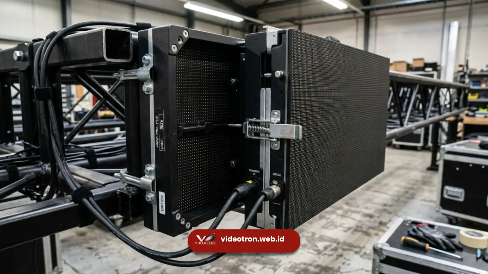

Sewa videotron Palembang adalah solusi layar LED sementara yang digunakan untuk mendukung acara korporat, seminar, pameran, dan seremoni resmi tanpa memerlukan investasi kepemilikan permanen.
Poin Penting:
- Sewa videotron cocok untuk kebutuhan acara berdurasi terbatas seperti seminar, pameran, dan seremoni resmi.
- Videotron modular memungkinkan instalasi dan pembongkaran cepat sesuai jadwal acara.
- Pertimbangan teknis seperti lokasi, jarak pandang, dan kondisi cuaca tetap berlaku pada videotron sewa.
- Perencanaan yang matang membantu memastikan videotron terpasang tepat waktu sebelum acara berlangsung.
Penyelenggaraan acara korporat maupun pemerintahan di Palembang semakin sering memanfaatkan videotron sebagai media pendukung visual, baik untuk menayangkan materi presentasi, dokumentasi acara, maupun informasi jadwal kegiatan secara real time. Berbeda dengan kepemilikan videotron permanen, layanan sewa memberikan fleksibilitas bagi penyelenggara acara yang hanya membutuhkan layar LED dalam durasi tertentu.
Kapan Sewa Videotron Lebih Tepat Dibanding Membeli?
Sewa videotron lebih tepat dipilih ketika kebutuhan layar LED bersifat sementara, seperti untuk mendukung satu kali acara atau kegiatan berdurasi terbatas tanpa rencana penggunaan jangka panjang.
Bagi penyelenggara seminar, pameran, atau seremoni resmi di Palembang, menyewa videotron memungkinkan alokasi anggaran yang lebih efisien dibandingkan investasi kepemilikan permanen yang memerlukan biaya perawatan dan struktur instalasi tetap. Sewa videotron juga memberikan fleksibilitas untuk menyesuaikan ukuran dan spesifikasi layar sesuai kebutuhan spesifik setiap acara, tanpa terikat pada satu konfigurasi tetap dalam jangka panjang.
Sebaliknya, kepemilikan videotron permanen lebih relevan bagi bisnis atau instansi yang membutuhkan media komunikasi visual secara berkelanjutan, seperti untuk fasad gedung atau area promosi tetap yang digunakan setiap hari sepanjang tahun.
Pertimbangan Teknis Videotron untuk Acara Sementara
Pertimbangan teknis videotron untuk acara sementara mencakup lokasi pemasangan, jarak pandang audiens, kondisi cuaca, serta ketersediaan sumber daya listrik di lokasi acara.
Lokasi pemasangan menentukan apakah videotron indoor atau outdoor yang lebih sesuai, sekaligus memengaruhi kebutuhan tingkat kecerahan layar. Acara yang berlangsung di ruang tertutup seperti aula atau ballroom umumnya menggunakan videotron indoor dengan pixel pitch rapat untuk menghasilkan gambar tajam pada jarak dekat, sedangkan acara di ruang terbuka membutuhkan videotron outdoor dengan proteksi cuaca dan kecerahan yang memadai.
Jarak pandang audiens turut memengaruhi pemilihan ukuran layar dan pixel pitch, agar konten tetap terbaca jelas dari posisi tempat duduk maupun area berdiri peserta acara. Kondisi cuaca menjadi pertimbangan penting khususnya untuk acara outdoor di Palembang yang berpotensi menghadapi hujan atau kelembapan tinggi, sehingga videotron sewa untuk kebutuhan ini perlu memiliki standar proteksi yang sesuai. Ketersediaan sumber daya listrik di lokasi acara juga perlu dipastikan sejak tahap perencanaan agar sistem videotron dapat beroperasi stabil sepanjang acara berlangsung.

Keunggulan Videotron Modular untuk Kebutuhan Acara
Videotron modular dirancang dengan sistem bongkar pasang yang memungkinkan proses instalasi dan pembongkaran berlangsung lebih cepat dibandingkan videotron dengan struktur permanen.
Setiap modul videotron dapat disusun sesuai ukuran dan bentuk yang dibutuhkan pada lokasi acara, baik untuk panggung utama, backdrop seremoni, maupun titik informasi di area pameran. Sistem modular ini juga memudahkan proses transportasi dan penyimpanan, karena unit-unit modul dapat dipisahkan dan disatukan kembali tanpa memerlukan struktur bangunan permanen.
Bagi penyelenggara acara di Palembang, videotron modular memberikan fleksibilitas untuk menyesuaikan konfigurasi layar dengan tema dan kebutuhan visual setiap acara, mulai dari seminar korporat berskala kecil hingga seremoni resmi berskala besar yang melibatkan banyak peserta.
Proses Pemasangan Videotron Sewa untuk Acara
Proses pemasangan videotron sewa umumnya dimulai dari survei lokasi, penyusunan rencana teknis, instalasi modul, pengujian sistem, hingga persiapan konten yang akan ditayangkan selama acara berlangsung.
Survei lokasi dilakukan untuk memastikan kondisi struktur, ketersediaan daya listrik, dan tata letak yang sesuai dengan kebutuhan penempatan videotron pada acara. Setelah rencana teknis disusun, proses instalasi modul dilakukan sesuai jadwal yang telah disepakati, diikuti dengan pengujian sistem untuk memastikan tampilan gambar, kecerahan, dan koneksi kontroler berfungsi dengan baik sebelum acara dimulai.
Tahap akhir mencakup persiapan dan pengaturan konten yang akan ditayangkan, termasuk pengaturan jadwal tayang apabila terdapat beberapa materi yang perlu ditampilkan secara bergantian selama acara berlangsung. Perencanaan yang matang sejak awal membantu memastikan videotron siap digunakan tepat waktu tanpa kendala teknis pada hari pelaksanaan acara.

Hawa Nadira
LED Technology Consultant dan Visual Educator
Konsultan dan spesialis solusi display digital berdedikasi tinggi yang fokus membagikan panduan edukatif mengenai penerapan teknologi layar LED videotron untuk kebutuhan interior modern di Indonesia.